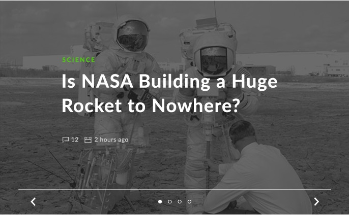

David Cameron is poised to return as UK primeminster after steering his conservatives to an unexpected majority , helped by a landslide for nationalists in Scotland at Labour's expense.
David Cameron is poised to return as UK primeminster after steering his conservatives to an unexpected majority , helped by a landslide for nationalists in Scotland at Labour's expense.imgDavid Cameron is poised to return as UK primeminster after steering his conservatives to an unexpected majority , helped by a landslide for nationalists in Scotland at Labour's expense.
David Cameron is poised to return as UK primeminster after steering his conservatives to an unexpected majority , helped by a landslide for nationalists in Scotland at Labour's expense.David Cameron is poised to return as UK primeminster after steering his conservatives to an unexpected majority , helped by a landslide for nationalists in Scotland at Labour's expense.
Buckingham Palace
David Cameron is poised to return as UK primeminster after steering his conservatives to an unexpected majority , helped by a landslide for nationalists in Scotland at Labour's expense.David Cameron is poised to return as UK primeminster after steering his conservatives to an unexpected majority , helped by a landslide for nationalists in Scotland at Labour's expense.
- markets
- business
- sport
- special reports
- culture
RELATED ARTICLES


Comments
John Doe
David Cameron is poised to return as UK primeminster after steering his conservatives to an unexpected majority
John Doe
David Cameron is poised to return as UK primeminster after steering his conservatives to an unexpected majority